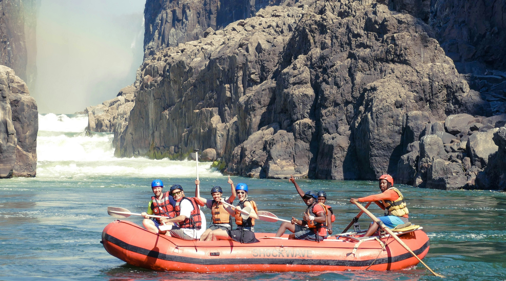
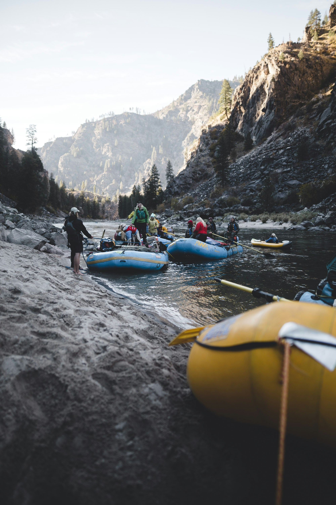
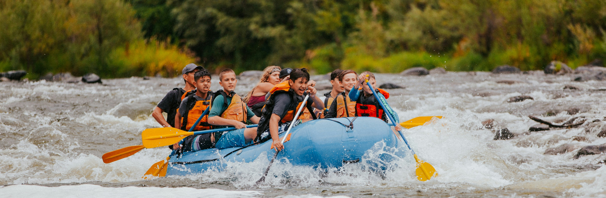

Tanauan White River Rafting
Location
Philippines
Adventure Level
Moderately Challenging
Minimum Age
14 (16 During high water)
From
1000-3000

Real Quezon River Rafting Balagbag Falls Family Adventure
River Rafting in Real Quezon is one of the few adventures that you can do in any weather. Outdoor trips are usually less fun with rain. But Real Quezon River Rafting is a lot more fun during the rainy season! This is because the rapids become more thrilling and the waterfalls are more exciting. When I heard that Real Quezon has already re-opened River Rafting since the lockdown, I took a trip with my family right away! In this post, I will share our post-lockdown River Rafting adventure with a side trip to Balagbag falls! Meanwhile, if you want to try River Rafting while the water is still exciting, then message The Wanderwalkers on FB to arrange a Joiner or Private tour for you!
Trip highlights
- Exhilarating Rapids and Drops: Get your adrenaline pumping as you tackle gushing waters and three exciting drops.
- A Scenic and Serene Ride: Enjoy the stunning natural scenery of lush greenery and rock formations during calmer parts of the trip.
- Swim at Bagumbong Falls: Take a break from rafting to trek to the beautiful Bagumbong Falls for a refreshing swim.
- Support for the Community: Your trip helps support the local boatmen, who are trained guides and stewards of the river.
What to expect
Itinerary & Map
Itinerary at a glance
We pride ourselves in running a relaxed and flexible schedule. Every Tanauan River rafting trip is different depending upon the group, other trips on the water, camp locations, and sometimes the weather.

Meeting Time & Place
Purok 3, Barangay Tanauan, Real, 4335 Quezon
Meeeting Time
8:30 am
Return
Approximately 6:30 PM, depending on water levels
Trip Map
Ancestral Lands Acknowledgement
We acknowledge that the Tanauan White River flows through the ancestral domain of the Dumagat-Remontado Indigenous people, the traditional custodians of these lands and waters in the Sierra Madre mountains of Quezon Province. We honor their enduring connection to this sacred territory and their rich cultural heritage.
